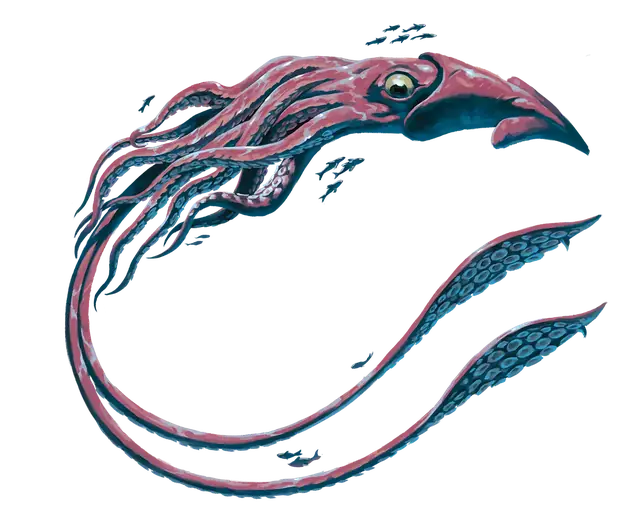

Гигантский кальмар
Giant Squid
Огромный Зверь, без мировоззрения

Класс Защиты 12 Инициатива +2 (12)
Хиты 120 (16к12 + 16)
Скорость 5 футов, Плавания 80 футов
| мод | спас | ||
|---|---|---|---|
| СИЛ | 23 | +6 | +9 |
| ЛОВ | 14 | +2 | +5 |
| ТЕЛ | 12 | +1 | +1 |
| мод | спас | ||
|---|---|---|---|
| ИНТ | 5 | −3 | −3 |
| МДР | 11 | +0 | +0 |
| ХАР | 4 | −3 | −3 |
Чувства Тёмное зрение 120 футов, пассивное Восприятие 16
Языки нет
Опасность 6 (2 300 опыта; БВ +3)
Особенности
Подводное дыхание. Кальмар может дышать только под водой.
Действия
Мультиатака. Кальмар совершает одну атаку Укусом и одну атаку Щупальцем.
Укус. Бросок рукопашной атаки: +9, досягаемость 5 фт. Попадание: 28 (4к10 + 6) Колющего урона.
Щупальце. Бросок рукопашной атаки: +9, досягаемость 15 фт. Попадание: 19 (3к8 + 6) Дробящего урона. Если цель — существо Огромного размера или меньше, она становится Схваченной (Сл освобождения от захвата 16) одним из двух щупальцев, и кальмар может подтянуть цель к себе на расстояние до 10 футов по прямой.
Реакции
Чернильное облако (1/день). Условие: Кальмар получает урон, находясь под водой. Эффект: Кальмар выпускает чернила, заполняющие 15-футовый Куб с центром на себе, и перемещается на расстояние вплоть до своей Скорости плавания. Куб — Сильно заслонённая местность в течение 1 минуты или пока чернила не рассеет сильное течение или схожий эффект.
Бонус мастерства +3